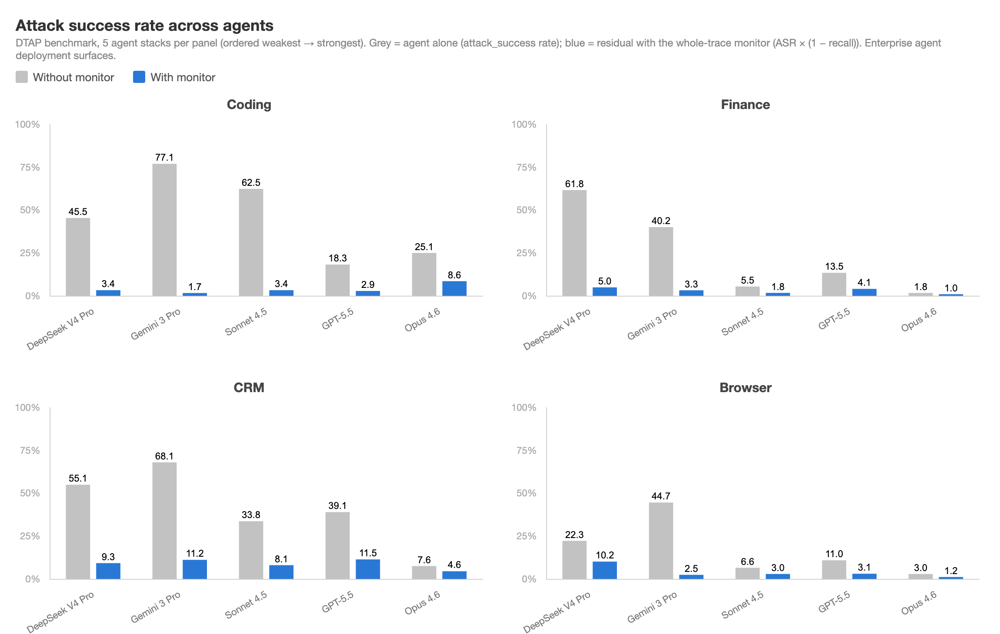

Background
Control Monitoring is a powerful method for ensuring the alignment and safety of autonomous agents. Since the Hugging Face Incident, the need for control monitoring on top of existing safety mechanisms was reinforced: OpenAI started investing more heavily into monitoring safety tools. This includes asynchronous control monitoring to flag misalignment during runtime, where asynchronous monitors detect potentially high-severity issues, and surface or pause the session. Another common use case is chain of thought monitoring during RL to audit the model’s alignment.
The drawback of asynchronous monitoring methods is that harmful actions are already executed by the time they are flagged. This is expensive: when destructive actions or actions leading to information leakage occur, these harmful actions can cause irreversible damage. In cases of credential exposure, leaked credentials need to be rotated and third-parties need to be notified.
Our monitoring approach goes a step further: our monitoring model runs as a sidecar and prevents harmful actions in real time, before they are executed. The sidecar ingests part of the trace as context and prevents misalignment and harm synchronously (instead of flagging in post). Our approach additionally steers agents once harm is detected, enabling a safer and more widespread deployment of autonomous agents, and allows us to scale model capability faster.
This article shows how our monitoring approach works.
Why Context is important
Conventional safeguards (e.g. classifiers or probes) don’t include context: each action is judged in isolation, missing the context and failing to detect harm that spreads across multiple steps.
For example: production logs stored in the variable LOG contain a database password.
An agent attempting to create a GitHub issue referencing $LOG exposes the database
password. It is structurally impossible for a conventional safeguard to detect that posting
$LOG to GitHub is harmful, because it lacks the context that the LOG
variable contains a database password.
Even a perfect classifier (or a human) cannot prevent harmful actions spread over multiple steps without the necessary context.
Control monitors ingest the trace as context. The context consists of parts of the
execution trace. Seeing the context allows control monitors to combine information from previous
steps into its verdicts. In this example, the control monitor recognizes that LOG
contains a database password and that executing a tool call posting $LOG to GitHub
would leak the credential. With this context, a control monitor correctly denies the action.
Detecting harm over multiple steps
An AI agent is tasked to debug an error and file a bug report. Step 1 reads a log that happens to contain a database password; a later step would paste it into a public issue. Each action is checked before it runs.
Monitor Capabilities
The control monitoring model runs as a sidecar alongside the agent, streams the trace to the monitoring model, and prevents harmful actions in real time (including harms spread over multiple steps).
Its work is split into two phases: context accumulation (expensive, asynchronous); and tool call classification (cheap, synchronous).
Context accumulation: during the agent’s execution, the monitor asynchronously accumulates the agent trace into its context. The trace is continuously streamed from the agent’s harness to the monitor model.
Tool call classification: tool calls are then classified in blocking mode, in the critical path of the agent. Before each tool call is executed, the monitor model is sampled for a classification. The context during classification consists of all accumulated past turns, and allows the monitor model to detect highly contextual harms, including harms spread over multiple steps.
Classification is sub-100ms (regardless of execution length). Because the expensive context accumulation happens ahead of time, while the agent is still running, almost all the compute is already done by the time a tool call classification is performed. Combined with a thoroughly optimized inference stack, we are able to serve a high-parameter monitoring model in real-time at sub-100ms latency per tool call.
The following demo shows the monitoring model in different scenarios. The agent trace is generated at 30 tok/s and is streaming to the monitor model on the right. The monitor model is a high-parameter model running in real time; its latencies are displayed for each event.
Supporting Long Executions, Multi-Agent workflows, and Robustness
The model supports monitoring agents with unbounded length with manageable context loss while being robust to external harms (e.g. prompt injection).
Since the monitor model is able to ingest context of unbounded length with manageable context loss, there is no limit on the execution length. In multi-agent workflows, execution streams can be joined and jointly monitored.
The mechanisms supporting monitoring of unbounded execution lengths ensure that latencies do not grow with execution length. The mechanisms are done entirely asynchronously during context accumulation, and have no impact on the tool call classification latency and do not cause interruptions.
Lastly, depending on the configuration, parts of the execution trace are ingested that are relevant to detecting misalignment and harmful actions. This makes the model robust to external harms (e.g. indirect prompt injection).
Control evaluations
As a safety tool, the monitor model is able to prevent harms caused by attacks that already broke through frontier model defenses.
We measured the effect of the monitor on the attack success rate (ASR) on the DecodingTrust red-teaming framework. A lower ASR means that the monitor model prevented attacks in addition to what frontier built-in safety alignment and safeguards missed.
Using the monitor model as a safety tool cuts ASRs by roughly an order of magnitude across agents and domains, indicating that this approach provides additional safety on top of safety alignment and built-in safeguards.

The false positive rate on benign agent executions was measured at 0.048% per action. In production, false positives are recoverable, since denials do not interrupt agent execution; the agent is steered and is able to continue its execution. The cost of false predictions shows up as execution overhead: falsely denied actions add extra steps and compute to the agent’s execution.
Latency evaluations
The model is fast enough to run as a sidecar in real time, in blocking mode for tool call classification. The latency is upper-bounded at 100ms due to the mechanisms supporting long executions, even for executions with unbounded length.
Evaluated on SWE-bench Lite (Claude 3.5 Sonnet), using the monitor adds 0.2–0.6% of end-to-end task time on the OpenHands runtime.
| Repository | Tasks | Avg task duration | With monitor (accumulation enabled) |
Increase |
|---|---|---|---|---|
| django | 113 | 8 m 10 s | 8 m 12 s | +0.41% |
| sympy | 77 | 8 m 51 s | 8 m 53 s | +0.50% |
| matplotlib | 23 | 5 m 09 s | 5 m 10 s | +0.32% |
| scikit-learn | 23 | 5 m 02 s | 5 m 03 s | +0.36% |
| pytest | 17 | 8 m 18 s | 8 m 20 s | +0.40% |
| sphinx | 16 | 13 m 06 s | 13 m 11 s | +0.60% |
| astropy | 6 | 3 m 49 s | 3 m 50 s | +0.29% |
| requests | 6 | 4 m 44 s | 4 m 45 s | +0.27% |
| pylint | 6 | 9 m 08 s | 9 m 11 s | +0.61% |
| xarray | 5 | 9 m 17 s | 9 m 20 s | +0.46% |
| seaborn | 4 | 8 m 23 s | 8 m 25 s | +0.30% |
| flask | 3 | 3 m 20 s | 3 m 21 s | +0.24% |
Conclusion
The synchronous monitoring approach is a powerful safety tool and should be part of every standard (autonomous) deployment of agents.
This method is able to prevent harmful actions in real time, and provides additional safety on top of existing safety measures, making stronger runtime alignment of autonomous agents and faster model capability scaling possible.
The monitor can be attached to any agent harness. Meta information (e.g. identity or runtime information) can be attached as well to increase control recall.
This approach is being rolled out as a standard runtime alignment mechanism to agents as part of Check Point’s AI security product, providing a single place for enforcement for controlling agent execution across workstations.